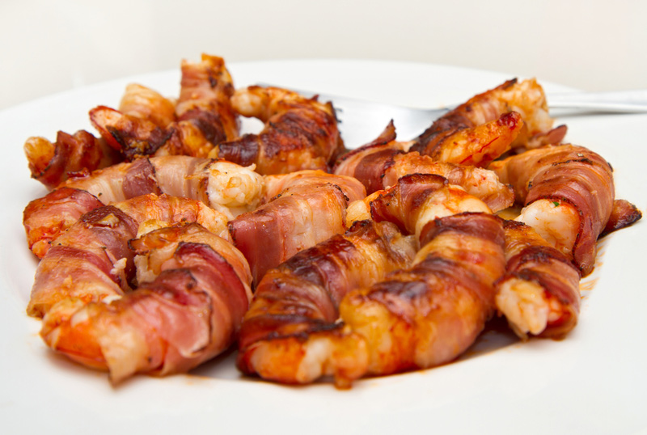

Bacon Wrapped Shrimp

Description
Bacon Wrapped Shrimp are one of the easiest, most delicious foods you can make.
A food that is endorsed by none other than Ron Swanson, enough said.
Ingredients
- Bacon
- Shrimp
- olive oil
- salt and pepper
- Shrimp
- Lemon Wedges
Instructions
- Arrange bacon on an oven safe rack set in a baking sheet and cook at 425˚F for 5 to 10 minutes, depending on thickness.
- Toss tail-on, peeled and deveined shrimp in olive oil, salt and pepper.
- Wrap each shrimp with a piece of bacon, securing with a toothpick and return to oven safe rack.
- Bake 10 minutes until shrimp and bacon are juicy and cooked through.
- Serve with lemon wedges.